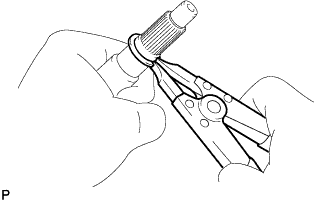
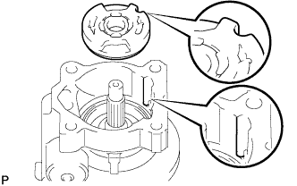
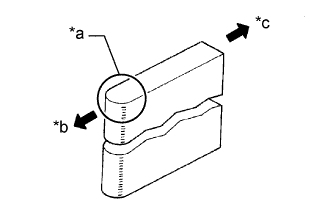
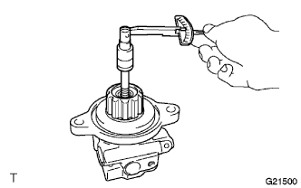

ЛОПАСТНОЙ НАСОС (для моделей с 1KD-FTV) > ПОВТОРНАЯ СБОРКА |
| 1. УСТАНОВИТЕ САЛЬНИК КОЖУХА ЛОПАСТНОГО НАСОСА |
Покройте кромку нового сальника кожуха лопастного насоса универсальной консистентной смазкой.
 |
При помощи SST и пресса установите сальник кожуха лопастного насоса на передний кожух лопастного насоса.
| 2. УСТАНОВИТЕ ПОДШИПНИК ВАЛА ЛОПАСТНОГО НАСОСА |
|  |
При помощи съемника стопорных колец установите пружинное стопорное кольцо на вал лопастного насоса.
Обмотайте зубчатую часть вала лопастного насоса защитной лентой.
С помощью пресса установите подшипник вала лопастного насоса на вал лопастного насоса.
| *1 | Защитная клейкая лента |
| *2 | Внутреннее кольцо |
| 3. УСТАНОВИТЕ ШЕСТЕРНЮ ЛОПАСТНОГО НАСОСА |
С помощью SST и пресса установите шестерню лопастного насоса на вал лопастного насоса.
| *1 | Пресс |
С помощью SST и пресса установите вал лопастного насоса в передний кожух лопастного насоса.
Установите пружинное стопорное кольцо № 1 кожуха лопастного насоса на передний кожух лопастного насоса.
| 4. УСТАНОВИТЕ ПЕРЕДНЮЮ ЗАЩИТНУЮ ШАЙБУ ЛОПАСТНОГО НАСОСА |
 |
Покройте новое кольцевое уплотнение жидкостью для механизма рулевого управления с усилителем и установите его на передний кожух лопастного насоса.
Покройте новое кольцевое уплотнение жидкостью для механизма рулевого управления с усилителем и установите его на переднюю боковую защитную шайбу лопастного насоса.
|  |
Совместите паз передней боковой защитной шайбы лопастного насоса с пазом переднего кожуха лопастного насоса и установите переднюю боковую защитную шайбу лопастного насоса.
| 5. УСТАНОВИТЕ СТОПОРНОЕ КОЛЬЦО ЛОПАСТНОГО НАСОСА |
Совместите паз стопорного кольца лопастного насоса с пазом передней боковой защитной шайбы лопастного насоса и установите стопорное кольцо лопастного насоса таким образом, чтобы нанесенная метка была направлена вверх.
| *a | Нанесенная метка |
| 6. УСТАНОВИТЕ РОТОР ЛОПАСТНОГО НАСОСА |
Смажьте ротор лопастного насоса жидкостью для механизма рулевого управления с усилителем.
Установите ротор лопастного насоса.
Смажьте все 10 пластин лопастей насоса жидкостью для механизма рулевого управления с усилителем.
|  |
Установите пластины лопастей насоса закругленными концами наружу.
| *a | Закругленный конец |
| *b | Наружу |
| *c | Внутрь |
| 7. УСТАНОВИТЕ ЗАДНИЙ КОЖУХ ЛОПАСТНОГО НАСОСА |
Покройте новое кольцевое уплотнение жидкостью для механизма рулевого управления с усилителем и установите его на задний кожух лопастного насоса.
Совместите штифт заднего кожуха лопастного насоса с пазами стопорного кольца, передней боковой защитной шайбы и переднего кожуха лопастного насоса и закрепите задний кожух лопастного насоса 4 болтами.
| 8. ЗАКРЕПИТЕ ЛОПАСТНОЙ НАСОС В СБОРЕ |
 |
С помощью SST зафиксируйте лопастной насос в сборе в тисках.
| 9. ПРОВЕРЬТЕ СУММАРНЫЙ ПРЕДНАТЯГ |
Убедитесь, что насос работает плавно, без постороннего шума.
Временно вверните технологический болт.
| Параметр / Устройство | Заданные условия |
| Диаметр резьбы | 10 мм (0,394 дюйма) |
| Шаг резьбы | 1,25 мм (0,0492 дюйма) |
| Длина болта | 50 мм (1,97 дюйма) |
|  |
С помощью динамометрического ключа проверьте крутящий момент.
| 10. УСТАНОВИТЕ ШТУЦЕР КАНАЛА ВСАСЫВАНИЯ |
Смажьте новое кольцевое уплотнение жидкостью для механизма рулевого управления с усилителем и вставьте его в штуцер канала всасывания.
Установите штуцер впускного отверстия на передний кожух лопастного насоса и закрепите его болтом.